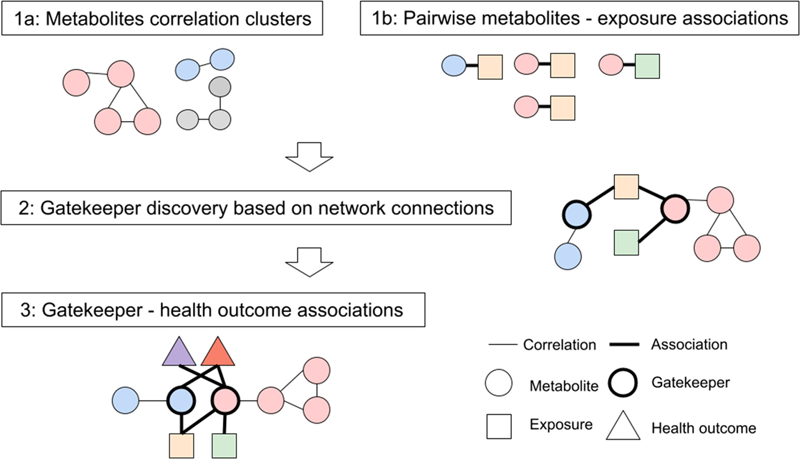
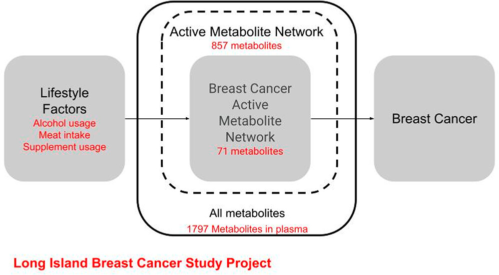
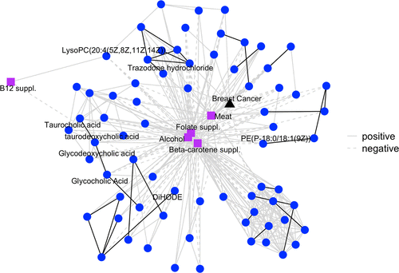
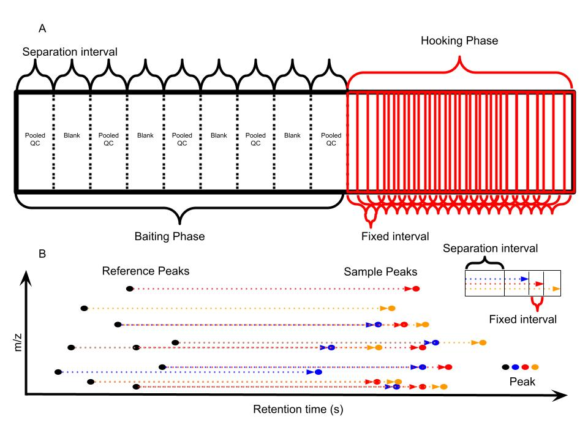

Data-driven untargeted metabolites discovery
2025-12-12
Problems
| Identified |
Known metabolites |
Unknown compounds |
| Not identified |
Potential metabolites |
Unknown unknowns |
Current Solution
SMILES string or molecular structures as input
Limited by Number of Reaction Iterations (3)
My solution
Focused on relationship among compounds

From Wikipedia Commons:A Sunday on La Grande Jatte, Georges Seurat
Why Reactions?

Unit: Gene (5) < Protein (20+2) < Metabolite (100K) < Compound (100M)
Combination: Gene (20,000-25,000) < Protein (20,000-25,000) < Compound(???)
Small molecule combination is a chemical reaction or paired mass distance
Why PMD?
\[\Delta m = Zm_{H} + Nm_{n} - M\]
The missing mass was converted into energy ( \(E=mc^2\) ) and emitted when the atom was made
Atoms -> Compounds -> Mass distances between compounds
Paired Mass Distances (PMD) is unique
High resolution mass spectrometry is required
PMDs in KEGG database
- Top 10 high frequency PMDs cover 68% known reactions

PMDs in real data
Isotopologues
- \([M]^+\) \([M+1]^+\)
- 1.006 Da
in source reaction
- \([M+H]^+\) \([M+Na]^+\)
- 21.982 Da
Homologous series
- Lipid \(-[CH_2]-\)
- 14.016 Da
Xenobiotic metabolism
- Phase I hydrolation
- 15.995 Da
PMD-based reactomics workflow
STEP1: Remove redundant peaks
STEP2: Extract high frequency PMDs
STEP3: Relationship network
How many real compounds among features?

Redundant peaks

GlobalStd Algorithm

GlobalStd Algorithm Step 1
Retention time cluster analysis

GlobalStd Algorithm Step 2
High frequency PMD analysis across RT clusters

GlobalStd Algorithm Step 2
High frequency PMD analysis across RT clusters - example

GlobalStd Algorithm Step 3
Independent peaks selection

How to define high frequency?
Relationship network

PMDDA workflow

PMDDA workflow

Case study

Case study
- TBBPA Metabolites PMD network

Biomarker Reaction
- Double bonds reactions in lung cancer

quantitative analysis of PMDs
- Normalization the stable ions and use unstable ions for quantitative analysis
Gatekeeper discovery

Active molecular network

Active molecular network

Take-home message
Metabolites discovery can be data driven
Reaction is the “base pair” for small molecules
Real data always enriched in few PMDs or reactions
PMD network analysis can accelerate metabolites discovery
One More Thing …
The Bottleneck: Insufficient Throughput
- Throughput Gap: Current output (thousands/year) lags behind genomics by an order of magnitude.
- Data Quality Issues:
- Severe Batch Effects.
- Retention Time (RT) Shifts.
Single File Injection (SFI)

Future Applications
- Large-Scale Cohorts: Ideal for biobanking and database construction.
- Dynamic Monitoring: Combine with in vivo sampling for real-time biological processes.
- Clinical Potential:
- Sample cost < $10 USD.
- High throughput targeted/non-targeted screening.
Validation: Experimental Setup
- Sample Set: 158 human plasma samples.
- Dynamic Range: Simulated across 7 orders of magnitude.
- Columns: HILIC (Hydrophilic Interaction) & RP (Reverse Phase).
- Modes: Positive (+) and Negative (-) Ion modes.
Validation: Key Results
Speed:
- Total analysis time for 158 samples: < 6 hours.
Qualitative & Quantitative Success:
Limitations
- Isomers:
- Same \(m/z\), different RT.
- Mitigation: Algorithm checks RT drift within 10s.
- Impact: < 2% of aligned reference peaks affected.
- Separation Efficiency:
- Isocratic elution is inherently less efficient than gradient elution.
- File size
Endogenous vs Exogenous


{kind=link}